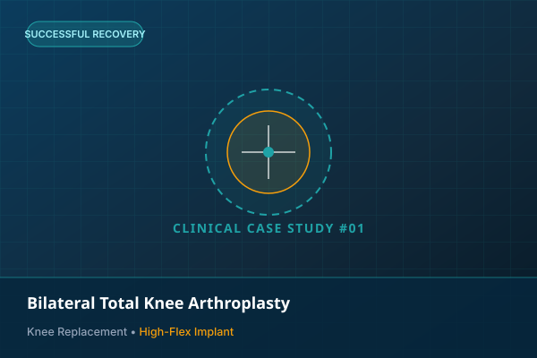
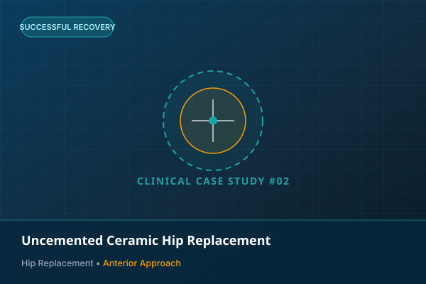
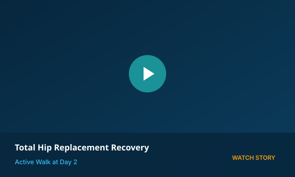
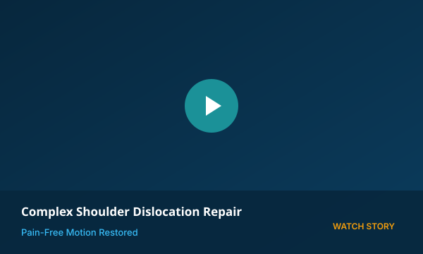
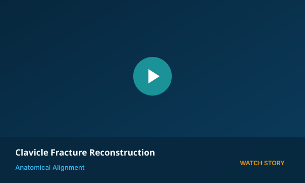
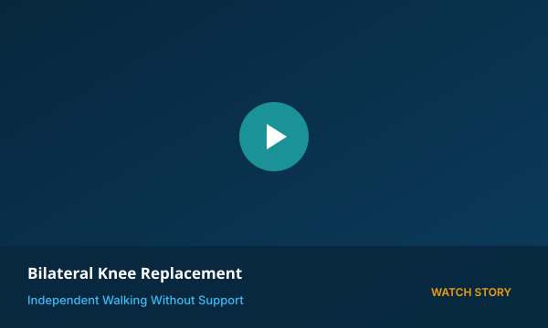

Walk Pain-Free Again.
Dr. Chandresh Sharma – Senior Orthopedic, Trauma & Joint Replacement Surgeon, Ahmedabad. Providing advanced joint preservation, minimally invasive arthroplasty, and empathetic patient care.
Operating Across 6+ Premier Healthcare Institutions
Dr. Chandresh Sharma leads advanced joint replacements, complex fracture reconstructions, and spine surgeries across Gujarat and Rajasthan's highest-accredited tertiary hospitals.
Lifeline Multispeciality Hospital
Full-time surgical and OPD headquarters equipped with cutting-edge laminar airflow modular OTs, 24/7 emergency trauma, and in-house physiotherapy.
HCG Hospitals
Collaborative surgical center for complex geriatric joint replacements, orthopedic oncology, and high-risk patients requiring multidisciplinary critical care.
Sterling Hospitals Network
Renowned tertiary hospital network utilized for advanced polytrauma salvage, multi-fragment fractures, and computer-navigated revision joint surgeries.
Marengo CIMS Hospital
JCI and NABH accredited super-speciality facility providing robotic assistance, advanced cardiac backup, and comprehensive intensive care.
SAL Hospital & Institute
Pioneering multi-speciality institute with comprehensive surgical theatres, specialized spine care setups, and state-of-the-art diagnostic infrastructure.
Chandra Bhushan Hospital
Dedicated monthly outpatient clinic & consultation gateway serving patients from Jodhpur, Pali, Barmer, and Western Rajasthan.
Comprehensive Orthopedic & Surgical Expertise
From precision robotic joint arthroplasty to microscopic spine decompression, every procedure is executed following stringent German surgical standards and personalized rehabilitation.
Joint Replacement
Removing worn articular cartilage and implanting state-of-the-art biocompatible knee & hip prostheses to restore natural, pain-free mobility.
- Total & Partial Knee Arthroplasty
- Ceramic Total Hip Replacement
- Complex Revision Surgeries
Spine Care
Addressing disc herniations, sciatica, nerve root compression, and spinal trauma using minimally invasive tubular techniques for rapid recovery.
- Micro-Endoscopic Discectomy
- Lumbar Canal Decompression
- Spine Fracture Stabilization
Trauma & Fractures
Advanced emergency reconstruction of high-velocity polytrauma, non-union fractures, and pelvi-acetabular injuries with limb salvage protocols.
- Pelvic & Acetabular Fixation
- Non-Union & Malunion Correction
- Polytrauma Emergency Care
Arthroscopy & Sports
Diagnostic and operative keyhole arthroscopy for knee ligaments, meniscus tears, recurrent shoulder dislocations, and athletic sports injuries.
- ACL & PCL Reconstruction
- Meniscus Repair & Preservation
- Rotator Cuff & Bankart Repair
Dr. Chandresh Sharma
Head of Orthopedics & Co-Director, Lifeline HospitalDedicated to Restoring Natural Movement & Quality of Life
After securing the sole merit seat for post-graduation in Orthopedics at PDU Hospital, Rajkot, Dr. Chandresh Sharma completed rigorous trauma training under Prof. Dr. KM Sayani and advanced joint replacement mentorship under Prof. Dr. Bhavesh Sachde.
He subsequently pursued prestigious international fellowship training at St. Joseph's Hospital, Germany under Prof. N. Linder and Prof. H. Salem, mastering primary and complex revision knee & hip replacement. He further refined his arthroplasty techniques alongside renowned surgeon Dr. SKS Marya at Max Healthcare, New Delhi.
Merit rank holder; specialized in high-energy trauma, complex limb fractures, and ligament injuries under senior professors.
Fellowship in Arthroplasty and Reconstruction Surgery under Prof. N. Linder & Prof. H. Salem for primary & revision joint replacement.
Exclusively trained in advanced surgical planning and computer-navigated arthroplasty under Dr. SKS Marya.
Co-founded Lifeline Multispeciality Hospital, Chandlodiya, Ahmedabad; directing a modern orthopedic department with 24/7 trauma response.
Treated Cases & Clinical Recoveries
Explore real surgical case studies treated by Dr. Chandresh Sharma across joint reconstruction, spine decompression, complex trauma salvage, and sports arthroscopy. Click any card to view detailed clinical notes.

Knee ReplacementBilateral Total Knee Arthroplasty
High-flexion German implants for severe bilateral knee osteoarthritis. Independent walking on Day 2.

Hip ReplacementUncemented Ceramic Hip Replacement
Direct anterior muscle-sparing approach for advanced AVN. Full natural range of motion restored.
 Complex Fracture
Complex Fracture
Pelvic & Polytrauma Limb Salvage
Biological internal fixation with contoured titanium plates following severe highway accident.
Micro-Endoscopic Disc Decompression
16mm incision tubular microdiscectomy relieving acute sciatica and neurological foot numbness.
 Arthroscopy
Arthroscopy
Keyhole ACL & Meniscus Repair
Anatomical hamstring autograft with all-inside meniscal preserving suture for competitive athlete.
 Special Cases
Special Cases
Bone Oncology & Mega-Prosthesis
Limb-sparing tumor resection and modular titanium knee joint reconstruction avoiding amputation.
Video Testimonials & Recovery Stories
Hear directly from patients operated by Dr. Chandresh Sharma as they describe their surgical experience, rapid post-op recovery, and resumption of active lifestyles.

3:45Total Hip Replacement
42-year-old active professional shares pain-free walking on Day 2.
 2:50
2:50
Shoulder Arthroscopy
Rotator cuff repair restored full overhead reach and athletic mobility.

4:10Shoulder Dislocation Repair
End to chronic recurring dislocations with keyhole Bankart reconstruction.

3:15Clavicle Fractures
Anatomical plate reconstruction for severe bike collision trauma.
 2:30
2:30
Knee Arthroscopy (Sports)
Preserving native knee cushioning with bio-absorbable meniscus repair.

5:20Bilateral Knee Arthroplasty
Mother walks pain-free without support; personal bedside care highlighted.
What Our Patients Say
Genuine experiences from patients who entrusted Dr. Chandresh Sharma with their mobility, joint reconstruction, and spinal health.
Why Choose Dr. Chandresh Sharma
Orthopedic care grounded in clinical honesty, international surgical standards, and hands-on bedside attention throughout your recovery.
Personal Bedside Care
Dr. Chandresh personally monitors post-op dressing, patient comfort, and assists in the patient’s first steps following joint replacement surgery.
Conservative-First Approach
Surgery is advised only when necessary. Non-operative management, physical therapy, and targeted medications are always prioritized.
German Fellowship Standards
Trained at St. Joseph's Hospital, Germany (FARS), applying world-class infection control, precision alignment, and long-lasting prostheses.
Minimally Invasive Techniques
Smaller skin incisions, minimal tissue disruption, less blood loss, and reduced post-op pain translate into faster discharge and recovery.
Transparent & Empathetic
Unrushed consultations where diagnostic scans, implant options, costs, and realistic recovery timelines are clearly articulated.
Advanced ICU & OT Facility
Co-Director at Lifeline Multispeciality Hospital with ultra-clean laminar airflow modular OTs, intensive care support, and emergency trauma readiness.
OPD Schedule & Hospital Locations
Regular outpatient consultations in Ahmedabad and specialized visiting OPD sessions in Jodhpur. Prior appointment booking is recommended.
Lifeline Multispeciality Hospital
Chandra Bhushan Hospital
Schedule Your Consultation with Dr. Chandresh Sharma
Get an accurate second opinion, evaluate your surgical or non-surgical options, and take the first decisive step toward pain-free walking.
Book an OPD Appointment
Fill in the patient details. Confirmation will be sent immediately.